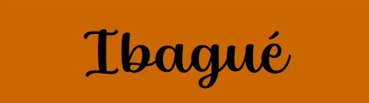
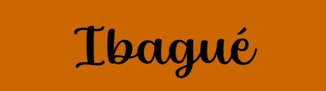

|


Proyectos en Bogotá
Proyectos en las localidades de Bogotá
Equilibrium 1
|
|
Vivienda multifamiliar equilibrium 1, proyecto ubicado en la ciudad de Bogotá, construido a partir del año 2018 y entregado hasta el año 2023, diseñado por el arquitecto Daniel bonilla y Marcela Albornoz.
La reflexión de este proyecto era crear una torre en altura con viviendas compactas, la cual permitiera darle una forma simultánea a la diversidad de tipos de familia en el mismo lugar.
|


|
|
Se estandarizaron varias tipologías de vivienda y en contraste, hubo un aprovechamiento de fachada para que por medio de su profundidad se generara la aparición de balcones y ventanas diversas, permitiendo esto, que cada célula fuera casi personalizada.
|


|
|
La fachada, configurada a través de un sistema de organización de elementos variables de muro-cajón, permitió un dinamismo estático del volumen, que en esencia configura una gran masa de arcilla horadada que promueve gran variedad de lectura de luz y sombra.
|
|
Por último, como aporte a la urbanidad de un sector en proceso de desarrollo, se deja una plazoleta triangular, la cual articula las dos calles contiguas, amortiguando y enlazando la torre con la ciudad, matizando a su vez la estrechez de las vías y andenes de acceso.
¿Dónde quieres vivir?
 

Incio -
Nosotros -
Proyectos -
Contacto
El contenido y los vínculos de esta página
son de carácter solamente académico. Los estudiantes de la Facultad de Arquitectura,
Diseño y Urbanismo de la Universidad De La Salle, sede Bogotá, organizan la IX Feria
Inmobiliaria Virtual, como ejercicio del espacio académico Representación de Proyectos.
Las imágenes utilizadas son referentes de proyectos reales y su utilización es de índole
exclusivamente académico
|
| |